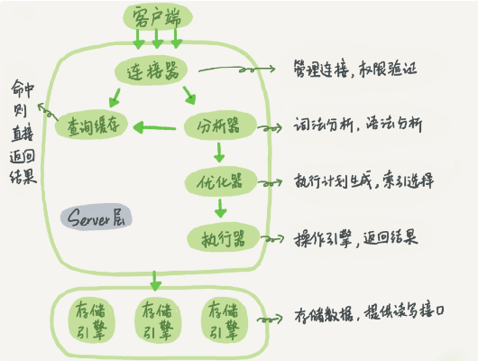
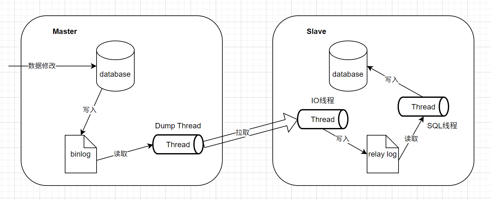

Mysql学习笔记
基础架构

图片来源: 极客时间-Mysql实战45讲
一下是Server层的几大模块:
- 连接器: 连接器负责跟客户端建立连接、获取权限、维持和管理连接.
- 可以通过
show processlist查看连接.
- 空闲连接时间如果超过8小时(默认), 会自动断开. 可以通过
wait_timeout进行设置.
- 尽量使用长连接
- 长连接可能导致内存占用过大, 因为mysql执行过程中, 使用的临时内存是存储在连接对象中的. 解决方案有二: 1. 定期断开长连接; 2. 5.7及以上版本, 可以通过执行mysql_reset_connection重新初始化连接资源.
- 查询缓存: 之前执行过的语句及其结果可能会以 key-value 对的形式，被直接缓存在内存中.
- 查询缓存的key是查询语句
- 查询缓存的命中率很低
- 一旦表中有更新操作, 相关缓存会立即失效
- mysql8.0以上版本移除了查询缓存
- 分析器: 词法分析, 语法分析
- 优化器: 决定使用的索引, 确定整个sql的具体执行流程, 生成执行计划
- 执行器: 按照执行计划, 开始与存储引擎层进行交互, 执行.
个人理解: mysql中, 会将schema整体在内存中存储一份, 这样可供分析器, 优化器等全局使用
日志系统
- redo log: Innodb存储引擎特有的日志系统, 通过WAL保证数据不丢失
- WAL(Write-Ahead Logging)预写日志技术. 如果不使用WAL, 每次有新的数据变更, 就需要找到指定的记录, 然后执行更新操作, 这样是随机写的过程, 性能较差. 如果采用WAL, 则会先采用追加写的方式, 将数据变更保存至日志. 然后在合适的时机将数据批量同步到数据库中, 性能较好.
- redo log默认大小为4G, 可以视作是一个环形, 采用循环写的方式, 如果已经写满, 则将其中一部分数据清除(具体看后面)
- redo log存储的是物理日志, 记录了每个数据页修改了什么
- redo log的主要用途是为了加快写入性能, 保证crash-safe. 具体来讲, Innodb在数据写入时, 不会直接落盘, 而是写入内存中的Buffer Pool中, 再定期同步到磁盘中. redo log就是为了保证在内存中的数据尚未同步到磁盘期间, 出现异常也可以恢复.
- binlog: 由执行器负责管理的日志系统, 各种不同的存储引擎共用, 用于归档
- 逻辑日志, 有两种记录格式: 1. statement - 记录sql; 2. row - 记录行内容(两条: 更新前/更新后); 3. mixed - 在不会引起丢失的情况下, 使用statement, 否则使用row格式;
- binlog是用来做数据备份和数据恢复的;
row格式的日志, 占用空间大, 例如, 如果条件删除, statement只需记录一条sql语句, 但是row格式需要把所有满足条件的记录都记录下来. 但是statement格式有时会导致恢复数据时存在数据丢失.
由于存在两份日志, 分别属于不同的层面, 为了使得两份日志保持一致性, 需要采用两阶段提交:
- Innodb - 写入redolog, 标记状态为prepare
- 执行器 - 写入binlog
- Innodb - 标记状态为commit
数据恢复:
- 数据恢复使用的是binlog, 而不是redolog. 首先, 数据库会有定期的全库备份, 先根据全库备份, 将数据恢复一部分. 然后, 在使用binlog, 将全库备份后又产生的数据恢复. 这个过程是手动进行的, 可以用于应对误删恢复等场景.
- crash-safe: redolog具备crash-safe能力. 假设突然断电, 当mysql重新启动后, innodb会根据redolog把Buffer Pool中没有落盘的数据恢复. 这个过程是系统自动完成的, 使得系统具备了自愈能力. 这种场景下就不能使用binlog了, 因为如果使用binlog, 还需要手动的完成应用全量备份, 应用binlog的过程.
对于redolog: ElasticSearch中也有类似的角色, Segment不会立即落盘, 而是驻留在内存中, 于是为了保证数据不丢失, 有transactionLog做担保.
一次insert操作涉及的日志以及顺序: undolog --> redolog(prepare) --> binlog --> redolog(commit)
事务
事务的属性(ACID):
- 原子性(Atomicity): 事务作为整体执行, 要么全部执行, 要么都不执行;
- 一致性(Consistency): 事务应保证数据库的状态从一个一致状态变为另一个一致状态;
- 隔离性(Isolation): 多个事务并发执行时, 一个事务的执行不影响其他事务的执行;
- 持久性(Durability): 一个事务一旦提交, 他对数据库的修改应该永久保存在数据库中.
事务的隔离级别有:
| 事务隔离级别 |
存在的问题 |
| 读未提交 |
脏读, 不可重复读, 幻读 |
| 读已提交 |
不可重复读, 幻读 |
| 可重复读 |
幻读 |
| 串行化 |
- |
- 脏读: 读到其它事务未提交的变更
- 不可重复度: 对某数据进行读取过程中, 有其他事务对数据进行了修改(UPDATE, DELETE), 导致第二次读取结果不同;
- 幻读: 事务在做范围查询过程中, 有另外一个事务对范围内新增或者删除记录(INSERT, DELETE), 导致范围查询的结果条数不一致;
mysql默认的隔离级别是可重复读, 可以通过transaction-isolation进行修改.
mysql中通过多版本并发控制(MVCC, Multi-Version Concurrency Control)来实现事务隔离.
这里涉及到一个新的日志: undo log
MySQL中, 实际上每执行一条更新操作, 都会生成一条undo log. 记录上的最新值, 可以通过undo log找到前一个状态的值. 也就是说undo log中记录了数据的多个版本. undo log中如果一条回滚日志之前的所有日志都不再被视图持有的时候, 这些日志就可以删除了. 所以不要有长事务, 长事务会导致一些视图始终存在. 从而导致undo log无法删除.
- 可重复读 - 事务启动时创建一致性视图, 整个事务过程中, 都用这个视图
- 读已提交 - 在每个sql开始执行时创建, 每一条sql执行前都会重新计算出一个视图.
读未提交不需要视图, 串行直接加锁
事务MVCC一致性视图创建概述:
- 每个事务会有一个transaction id, 这个值是严格递增;
- 每条数据更新时, 都会有一个版本id -- tx_id, 这个tx_id等于生成它的事务的transaction id;
- 数据的版本不会记录, 而是undo log中会记录从一个版本回退到前一个版本的具体细节; 在undo log中, 相当于存在一条数据的多个不同的版本;
- 一个事务启动时, 会创建一个属于它的数组, 记录当前活跃的所有事务的transaction id, 这个数组是有序的, 其最小值记为低水位, 最大值记为高水位;
- 从undo log获取到一条数据的多个tx_id.
- 如果tx_id小于低水位, 则该版本数据属于已提交的事务, 可见;
- 如果tx_id大于高水位, 则该版本数据属于视图创建后的事务生成的, 不可见;
- 如果tx_id在低水位和高水位之间, 则又分为两种情况: 1. tx_id在数组中, 该版本数据由未提交事务生成, 不可见; 2. tx_id不在数组中, 该版本数据由已提交事务生成, 可见;
索引
这里只介绍Innodb引擎的索引. Innodb引擎使用B+树来存储数据.
- 主键索引: 主键索引的叶子节点保存了整行的数据记录. 也被称为聚簇索引.
- 非主键索引: 非主键索引的叶子节点保存了主键索引的id, 被称为二级索引.
这种将数据直接存储在主键索引下的叶子节点中的方式称为"索引组织表"
添加索引的sql:
alter table table_name add index index_name(col1(len));
B+树存储的优点:
- B+树是多叉树, 可以有效降低树的高度.
- 每个数据页存储多个树节点, 可以有效减少访问磁盘的次数.
- 每个数据页的默认大小为16k.
其他:
- 主键索引优先使用自增主键, 这样, 插入数据的时候, 是在b+数最后进行追加, 性能好. 如果使用uuid等方式, 就会随机插入数据页中, 性能较差. 同时也可能导致插入时页分裂.
- 当一个数据页存储不下数据时, 会触发页分裂. 当存在两个数据页的利用率较低时, 会触发页合并.
- 通过二级索引查询时, 如果想获取到整条记录, 会先根据二级索引找到主键, 然后再根据主键索引查询到整条数据, 这个过程称为回表.
回表会导致查询两棵索引树, 性能会有消耗, 如何避免回表:
- 覆盖索引: 如果一个二级索引上记录的信息, 就是查询想要的全部信息, 那就不需要回表, 这称为覆盖索引.
- 最左匹配原则: 覆盖索引必须满足最左匹配原则, 否则就不会走索引
- 索引下推: 在5.6开始, 推出的一项优化措施. 如果查询条件是多个时, 通过二级索引查询到主键, 当需要回表时, 会向校验这个索引中的其他数据是否与查询条件匹配, 如果不匹配, 则该条记录不会回表. 这样就减少了回表的数据记录条数.
索引优化
- 选错索引
- 通过
analyze table 表名命令, 更新索引统计信息, 避免一些统计信息不准确导致选错索引的问题
- 通过
force index(索引名)指示强行使用某个索引
- 删掉某些不必要的索引, 从而避免选错索引
- 使用前缀索引
- 通过使用前缀索引可以减少空间使用, 增加每个数据页存储的索引个数
- 前缀索引会导致无法使用覆盖索引
锁
全局锁
命令: flush tables with read lock, 执行该命令后, 其他线程的数据更新语句, 数据定义语句, 更新类的事务提交语句都会被阻塞.
应用场景:
- 全库逻辑备份: 全库逻辑备份过程中, 数据处于只读状态. 保证数据的逻辑时间点一致.
全局锁是在Mysql的Server层执行的, 这样不管底层数据库执行引擎是什么, 都能使用这个工具. 但是, 全局锁导致整个数据库都处于只读状态, 大部分时候, 这显然是不可接受的. 对于Innodb引擎来说, 可以通过MVCC在事务中取得一个一致性视图, 保证数据的逻辑时间点一致.
全局锁还有一个特点: 加锁的这个会话中, 如果客户端意外断开, 数据库会自动释放全局锁.
表级锁
表级别的锁分为两种:
- 表锁
- 元数据锁
对于表锁:
语法: lock tables ... read/write
- 表锁在会话意外中断时, 也可以主动释放锁.
- 表锁不仅限制其他线程的读写, 也会限制自身线程. 如果一个线程获取到一张表的读锁, 那么只能对该表进行读操作, 不能对该表进行写操作.
对于元数据锁(MDL, meta data lock):
元数据锁不需要显示调用:
- 当对一个表进行增删改查时, 自动加MDL读锁
- 当对一个表结构进行变更时, 自动加MDL写锁
读锁之间不互斥, 因此可以有多个线程对同一张表进行增删改查; 写锁是排它锁, 只允许一个线程执行
MDL会遇到一种情况, 是: 获取写锁后, 由于有读锁存在, 导致自身阻塞, 而这时实际上已经获取到了写锁, 进而导致新的获取读锁的线程阻塞, 最终可能引发大量线程阻塞.
行锁
两阶段锁协议: Innodb中行锁在需要的时候加上, 在事务结束时释放.
当两个事务互相等待对方资源释放时, 就会出现死锁. mysql内置死锁处理措施有二:
- 超时 -
innodb_lock_wait_timeout, 默认50s
- 死锁检测 -
innodb_deadlock_detect, 默认on; 死锁检测在并发线程数较多时, 性能会较低.
为避免死锁, 应该在一个事务中, 把最可能造成锁冲突, 最可能影响并发度的锁尽量往后放.
死锁日志查看:
- SHOW ENGINE INNODB STATUS; 查看最近一次死锁日志
- 默认情况下
innodb_print_all_deadlocks是关闭的, 如果是开启的, 会将死锁日志输出到日志文件(通过show variables like 'innodb_print_all_deadlocks';查看是否开启); 开启后, 默认日志输出到/var/log/mysql/error.log或者通过SHOW VARIABLES LIKE 'log_error';
事务与锁--当前读
当前读: 更新数据都是先读后写, 而这个读, 只能读当前的值.
当前读的时候, 完全依赖锁, 而无视事务的隔离性了.
只要加锁, 就会触发当前读, 下面这三条都会使用当前读.
update t set k = k + 1 where id = 1;
select k from t where id=1 lock in share mode;
select k from t where id=1 for update;
间隙锁与next-key lock
innodb在可重复读级别下, 为了防止当前读时出现幻读, 会使用间隙锁(gap lock). 间隙锁是指在已存在的数据行之间添加的锁. 间隙锁的作用是: 阻塞向这个间隙中插入一个记录这个操作.
next-key lock是间隙锁和行锁的组合.
间隙锁是开区间范围上的锁, next-key lock是前开后闭区间上的锁.
间隙锁可能会导致锁住的范围过大, 降低了系统的并发度. 在经过评估可行的情况下, 可以选择调整为读已提交.
为什么间隙锁只出现在可重复度级别? 因为可重复度需要保证从事务开始到事务结束都是一致性视图, 如果出现幻读, 就会导致一致性视图存在问题. 而如果级别是读已提交, 不需要事务开始到结束都是一致性视图, 是允许幻读出现的.
可重复读级别下, select语句并不是一定会加间隙锁的. 而是select ... for update等需要当前读的情况下才需要间隙锁.
加锁规则:
- 基本单位是next-key lock
- 查找过程中访问到的对象才会加锁
- 索引上的等值查询, 给唯一索引加锁时, next-key lock退化为行锁
- 索引上的等值查询, 向右遍历, 最后一个值不满足等值条件时, next-key lock退化为间隙锁
- 唯一索引上的范围查询, 会访问到不满足条件的第一个值为止
Innodb写入流程
以下这些概念都是Innodb的:
- Buffer Pool
- 用于存储运行期间, 加载到内存中的数据页
- 在更新一条记录时, 如果数据页已经加载到Buffer Pool中, 则直接更新Buffer Pool中的数据页
- 更新后的数据页如果没有同步到磁盘中, 则称为脏页
- Change Buffer
- Buffer Pool中的一块特殊区域, 不用来存储数据页, 而是用来存储数据变更动作(类似于redo log)
- 在更新一条记录时, 如果数据页没有加载到Buffer Pool中, 则直接将这个变更动作存储到Change Buffer, 免去了从磁盘读取数据页的操作
- Change Buffer也会单独被持久化到磁盘上
- innodb_change_buffer_max_size, 用来控制change buffer在buffer pool中的占比
- Merge
- 将Change Buffer中的变更记录应用到数据页的过程称为Merge
- 一旦由于查询等操作, 导致数据页被加载到内存, 就会触发Merge操作
- 系统会定期执行Merge操作
- 数据库正常关闭时, 会执行merge操作
- Redo log
- redo log用来对Buffer Pool中的脏页和Change Buffer做crash-safe担保, 一旦发生异常, 导致脏页和ChangeBuffer丢失, 可以通过redo log恢复
- Flush
- 将内存中的脏页同步至磁盘的过程称为Flush
- Flush触发时机:
- 当redo log写满了, 清除一部分redolog时
- 此时触发flush, 会使得系统不再接受更新操作, 所有更新都会阻塞
- 当Buffer Pool快满的时候,
innodb_max_dirty_pages_pct控制脏页比例上限
- 当mysql比较空闲时
- mysql正常关闭时
- 通过
innodb_io_capacity参数, 告诉mysql当前磁盘的io读写能力, 使得其可以参照该能力去进行flush. 一般这个值可以设置成磁盘的IOPS
- flush过程中, 不需要redo log同步变更, redo log重放的过程值, 可以识别出来哪些数据页是刷过的.
- 当刷新脏页时, 连续的多个脏页都会被flush. 对于机械硬盘, 这是有好处的, 但是对于固态硬盘, 这样就没有必要了, 可以通过
innodb_flush_neighbors控制, 当该值为0时, 则只刷新自己
在读多写少的一些场景中, 由于数据页会频繁的被加载至内存中, 所以没有必要使用ChangeBuffer, 反而增加了ChangeBuffer维护成本
在对唯一索引字段上的数据进行修改时, 不会使用到change buffer, 这是因为需要先将数据页加载到Buffer Pool用以验证唯一性约束是否满足.
排序
排序主体流程:
- 将符合条件的记录加载至sort buffer, sort buffer是线程私有的,
sort_buffer_size控制这块内存区域的大小;
- 如果加载的记录占用空间超出sort buffer, 则需要转至文件中, 使用磁盘的临时辅助文件进行排序;
- 如果使用磁盘进行辅助排序, 排序过程是将数据拆分成多个辅助文件, 每一次将一个辅助文件加载至内存进行排序; 最后再把排序后的文件多个文件整体归并.
上面这个排序过程为: filesort 即使不需要转至磁盘, 也叫filesort.
此外, 排序有分为两种:
- 全字段排序 - 加载到sort buffer的是需要返回给客户端的全部字段;
- rowid排序 - 加载到sort buffer的数据只有主键id和参与排序的字段, 在排序完成之后, 需要回表将其他需要的字段补充完整.
通过配置max_length_for_sort_data, 可以控制使用哪种排序方式, 如果单行数据尺寸超出这个值, 就被视为单行太大, 从而使用rowid.
如果排序字段上存在索引, 则不需要上面的排序了, 因为这时的数据本身就是有序的.
关联查询
关联查询join, 在mysql中存在几种不同的关联查询方式:
- Index Nested-Loop Join: 先全量扫描驱动表, 扫描过程中, 根据每条记录结果, 通过被驱动表的索引树, 获取被驱动表关联记录
- Block Nested-Loop Join: 直接获取驱动表的结果集, 放入join buffer, 扫描被驱动表, 把满足条件的放入结果集返回
- 驱动表和被驱动表都做了一次全表扫描
- join buffer有大小限制, 默认256k. 如果放不下, 就先拿一部分驱动表的数据放入join buffer然后匹配结果直接返回, 然后再拿一部分再匹配, 直到完成遍历. 这样就会导致被驱动表反复进行多次全表扫描.
不论在NLJ还是BNL中, 都应该尽可能使用小表作为驱动表. 关联查询时, 尽可能使用索引.
Multi-Range Read优化:
这个单纯是查询优化, 并不是只针对关联查询. 首先依据是: 读取数据时, 如果是范围查询, 按照顺序, 依次读取要比随机读取性能好. 例如, in查询, in里边如果可以走索引, 那么在索引树上就是天然有序的, 那么就可以将in中的元素排序, 然后在查询索引树. 这就是MRR.
Batched Key Access优化;
这个是通过MRR, 对NLJ进行的优化. 上面介绍, 全量扫描驱动表, 然后一条一条的查询被驱动表的索引树, 可以优化为将驱动表查询得到的结果排序, 然后批量的查询被驱动表的索引树. 这就是BKA. 另外BKA存储批量查询条件的地方就是join buffer.
BNL算法对系统的主要影响:
- 可能会多次扫描被驱动表，占用磁盘 IO 资源;
- 判断 join 条件需要执行 M*N 次对比（M、N 分别是两张表的行数），如果是大表就会占用非常多的 CPU 资源；
- 可能会导致 Buffer Pool 的热数据被淘汰，影响内存命中率。
其他
- 数据库中删除一条记录, 只是将数据页中该记录的空间标记为可复用. 这样久而久之产生很多"空洞";
- innodb引擎中, 处于MVCC考虑,
count(*)会进行全表扫描;
- 查询条件, 对索引字段做函数操作, 会破坏索引值的有序性, 因此优化器会放弃走索引树;
- mysql中, 如果字符串和数字进行比较, 会将字符串转为数字;
查询慢的一些场景
- MDL导致, 通过
show processlist查看线程状态;
- 行锁导致, 一个查询使用的当前读, 遇到另一个线程持有行锁. 通过
select * from sys.innodb_lock_waits where locked_table = 'test.t'找到持有锁的线程
- 一致性读的情况下, 有可能一条数据的活跃版本太多, 导致通过undo log回溯的链条太长, 导致查询慢
表空间
- 系统表空间: 用于存放系统信息, 对应磁盘文件
ibdata1
- 数据表空间: 用于存放用户数据, 对应磁盘文件
表名.ibd
执行计划
mysql> explain select * from city;
+
| id | select_type | table | partitions | type | possible_keys | key | key_len | ref | rows | filtered | Extra |
+
| 1 | SIMPLE | city | NULL | ALL | NULL | NULL | NULL | NULL | 1 | 100.00 | NULL |
+
- select type : 表示select类型, 常见取值如下:
- simple : 简单表, 不使用表连接和子查询的查询
- primary : 主查询, 即外层查询
- union : union关键字后面的查询
- subquery : 子查询中的第一个select
- table : 查询的表
- partitions : 查询的分区
- type : 访问类型: 性能由差到好排列如下:
- all : 全表扫描, mysql遍历全表找到匹配行
- index : 全索引扫描, mysql遍历该表的全部索引找到匹配行
- range : 局部索引扫描, 常见于<, <=, >, >=, between等查询.
- ref : 使用非唯一索引或者前缀索引扫描, 返回匹配某个单独值的记录. ref还常出现于join中.
- eq_ref : 使用唯一索引扫描, 出现在多表连接使用primary key或者unique index作为关联条件的查询中.
- const/system : 单表中使用主键索引或者唯一索引只匹配一行的查询.
- null : 不需要访问表和索引就能得出结果的查询.
- possible_key : 查询中可能使用的索引
- key : 实际使用的索引
- key_len : 使用到索引字段的长度
- rows : 扫描的行数
- filtered : 预估一个符合条件的行数占表中总行数的百分比.
- Extra : 执行情况的额外说明. 也很重要:
- using index condition : 索引下推(ICP, index condition pushdown)
- using index : 覆盖索引, 不需要回表
- using where : 使用where过滤了一部分条件(不一定回表)
- using temporary : 使用了临时表. 经常发生在存在Group By和Order by子句, 但是两个子句中使用的列不同的情况
- Using filesort : 文件排序. 当查询中存在order by子句, 并且无法通过索引完成排序, 只能全表扫描, 然后存储排好序的键, 然后根据键检索出行.
type类型还有一些:
ref_or_null: 和ref相似, 区别在于条件中包含对null的查询.
index_merge: 索引合并优化
unique_subquery : in的后面是一个查询主键字段的子查询
index_subquery : in后面是查询非唯一索引字段的子查询
主从复制
MySQL主从复制时基于binlog实现的. 大致流程如下:

场景应用
热点数据更新
Mysql层面如何应对热点数据频繁更新?
- 数据分桶: 将一大批数据拆分成多个小数据, 分别在不同的桶中执行;
- 合并请求: 多次更新操作合并为一个, 进行批量更新;
- 改造Mysql底层
自增主键用尽了
- 对于自定义的主键, 自增主键用尽之后, 新插入数据时, 主键不会自增, 进而导致报主键冲突;
- 对于不是自定义的主键, mysql会自己创建一个隐式主键
row_id, 这时如果用尽了, 会从0开始重新自增, 这时即使原来已经有row_id为0的数据, 也不会报主键重复, 而是直接覆盖这条数据;
解决办法:
- 如果原来是int, 改成bigint就可以了;
- 如果原始是bigint, 那么建议将旧数据归档到另一个表, 然后再利用释放出来的主键;
like模糊查询优化
对于abc%查询, 可以直接走索引, 就不需要考虑啥优化了; 对于%abc如何优化呢? 可以这样: 新建一个列, 保存原始字符串值的倒序, 然后查询的时候, 这样查: like 'cba%'.
在MySQL5.7.6之后, 新增了虚拟列, 可以直接使用虚拟列实现这一点;
alter table xxx add column v_column varchar(50) generated always as (reverse(name)) virtual; // 创建虚拟列
alter table xxx add index idx_name_virt (v_name); // 为虚拟列创建索引
数据库加密后模糊查询
- 对于加密时候使用的是数据库加密函数进行加密的情况, 这时模糊查询可以使用解密函数解密后查询;
- 明文分词: 将字符串分词之后, 再分别加密, 然后再拼接后存入数据库. 查询时, 也是先分词, 再加密, 再拼接, 再查询;
不建议使用外键
阿里开发手册中指出: 不得使用外键与级联, 一切外键概念必须在应用层解决;
使用外键会带来的问题:
- 性能问题: 每次增改删都需要做外键约束检查;
- 锁竞争问题: 有外键约束, 就会导致有时需要用到额外的锁;
- 无法适应分库分表
- 逻辑删除: 业务中经常使用的是逻辑删除, 有外键会导致这种删除很麻烦;
DELETE/DROP/TRUNCATE
- DELETE基于行的删除;
- TRUNCATE用于快速删除表中所有记录, 并重置任何自增的计数器;
- DROP用于删除整个表结构;
常用命令
./mysql -h127.0.0.1 -P3306 -uaaa -p
show databases;
use xxdatabaseName;
Reference